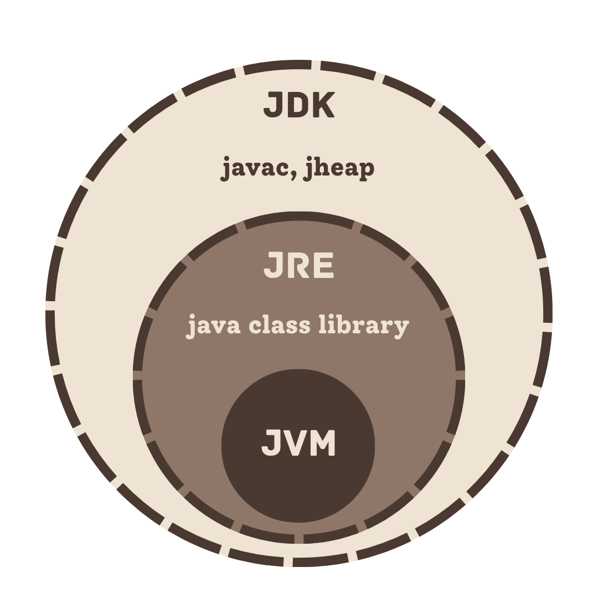

Basics of Java
Explanation & Learnings
Quiz #1 covered the basics of Java — its history, how it started as "Oak" back in 1991 at Sun Microsystems, the core OOP principles: abstraction, encapsulation, inheritance and polymorphism, and the different variable types. I had to go through the slides a few times just to keep everything straight, especially the differences between JVM, JRE, and JDK since they sound similar but serve different purposes.

One thing that was new to me in this lesson was the difference between JDK, JRE, and JVM. Coming from C and Python, I never really had to think about this kind of setup — you just compile or run your code and that's it. In Java, the JDK is what you use to actually write and compile your programs — this is where the devtools are located, while the JRE is what provides the environment to run them. And the JVM is the one that executes the bytecode. This is how Java's "write once, run anywhere" or WORA concept works.
The quiz was more on identification so it was really about memorization. Gizmo flashcards indeed helped a lot. Looking back, it was actually a good starting point because those concepts kept coming up in the lessons that followed. Understanding what OOP is and how Java even works under the hood made it easier to actually write and understand code later on.